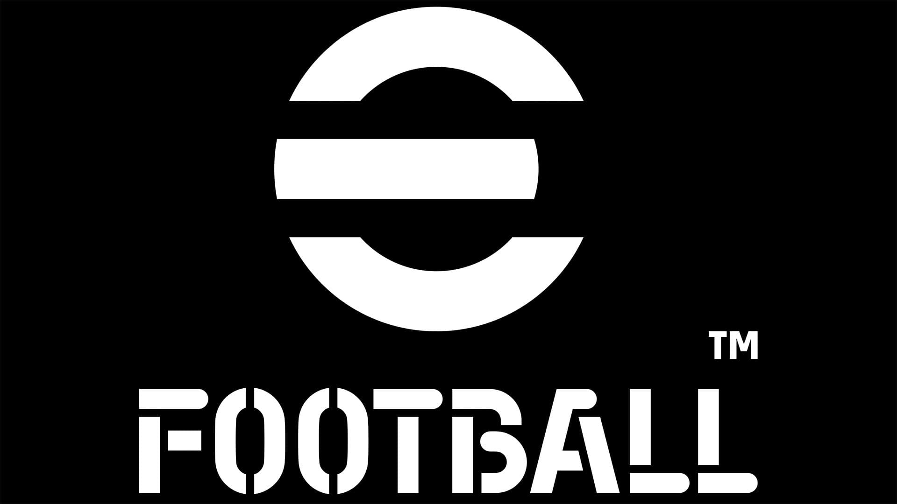

EFootball
eFootball (anteriormente conocido como Pro Evolution Soccer o PES) es un videojuego de simulación de fútbol desarrollado y publicado por Konami. Desde 2021, el título adoptó el nombre "eFootball" y se convirtió en un juego free-to-play (gratuito), con una fuerte orientación al juego en línea y a las actualizaciones constantes en lugar de lanzar nuevas ediciones
⭐ Características principales de eFootball
🎮 Jugabilidad Estilo de juego realista con enfoque táctico; mejoras constantes vía parches.
🌍 Licencias Licencias limitadas respecto a FIFA; incluye algunos clubes exclusivos como FC Barcelona, Juventus, Manchester United, entre otros.
⚙️ Motor gráfico Uso de Unreal Engine ha mejorado la física del balón y las animaciones.
📦 Modos de juego Dream Team (equipo personalizado), partidos de eventos, partidas online y offline.
💰 Modelo de negocio Gratuito, con contenido adicional de pago (jugadores, monedas, mejoras).
🔄 Actualizaciones Servicio vivo, con actualizaciones frecuentes de contenido y plantillas.
🤖 IA y física Inteligencia artificial mejorada, aunque a veces criticada por inconsistencias.
🏆 eSports Fuerte presencia en torneos competitivos a nivel global.
🔻 Críticas y desafíos:
El lanzamiento inicial de eFootball 2022 fue muy criticado por su pobre calidad técnica.
Falta de contenido en comparación con otras sagas como FIFA/EA Sports FC.
Algunas animaciones y mecánicas aún se sienten limitadas o poco pulidas.
Problemas de conexión y emparejamiento en partidas online.
✅ Aspectos positivos actuales:
Jugabilidad más pausada y estratégica que otros juegos de fútbol arcade.
Accesibilidad como juego gratuito.
Enfoque en mejoras constantes gracias a la retroalimentación de la comunidad.
Buena representación de ciertos clubes con licencias exclusivas.